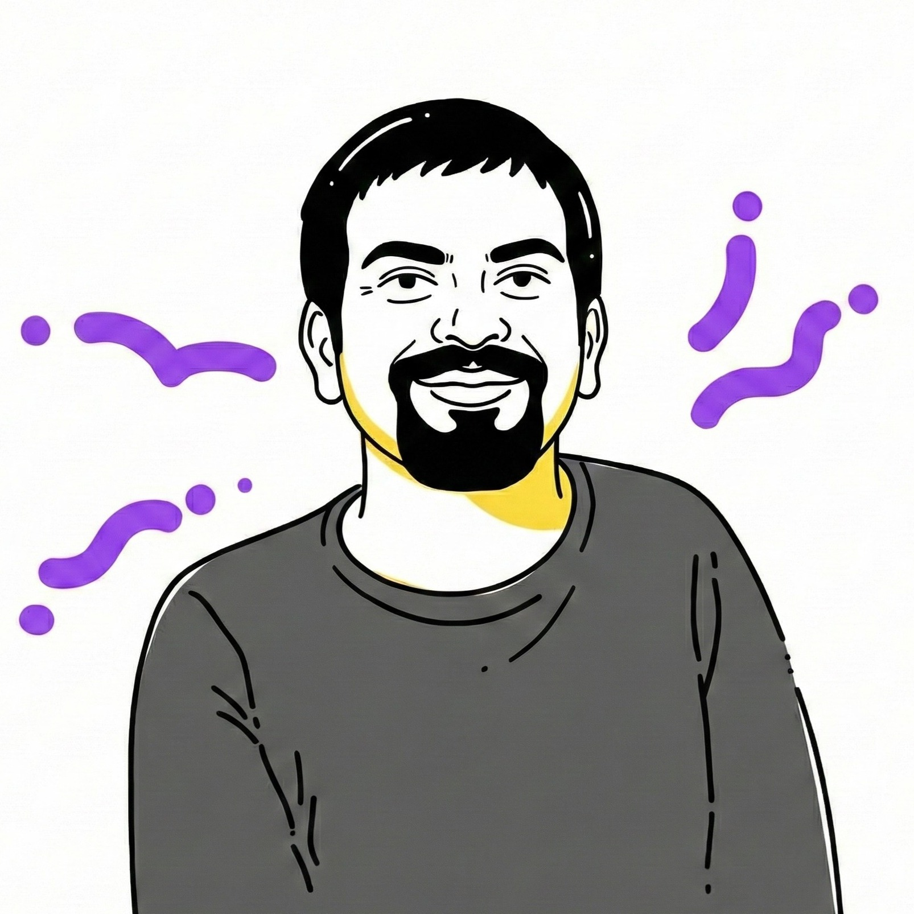

circadian clock and sleep genetic networks, and how these interactions shape various behavior and physiological responses. During my PhD, I worked on understanding the genetic and molecular mechanisms underlying complex behaviors, specifically timing of a behavior (chronotypes), under the influence, or independent of the circadian clock, at the Chronobiology and Behavioural Neurogenetics Laboratory, JNCASR.
statistical modeling of behavior to quantitative genetics and multi-omics techniques. Previously, I have also worked on thermo-sensitive Transient Receptor Potential (TRP) channels and their role in osteogenesis, using rodent models, primary bone cells, pharmacological modulators, and molecular dynamics during my masters studies at NISER.
cell biology and bioinformatics. After my PhD from JNCASR in Bangalore, I moved to Bethesda, MD to join the NIH. Apart from lab work, I am a leisure photographer, connoisseur of sci-fi and good food! For a full list of my publications, check out my Google Scholar profile.